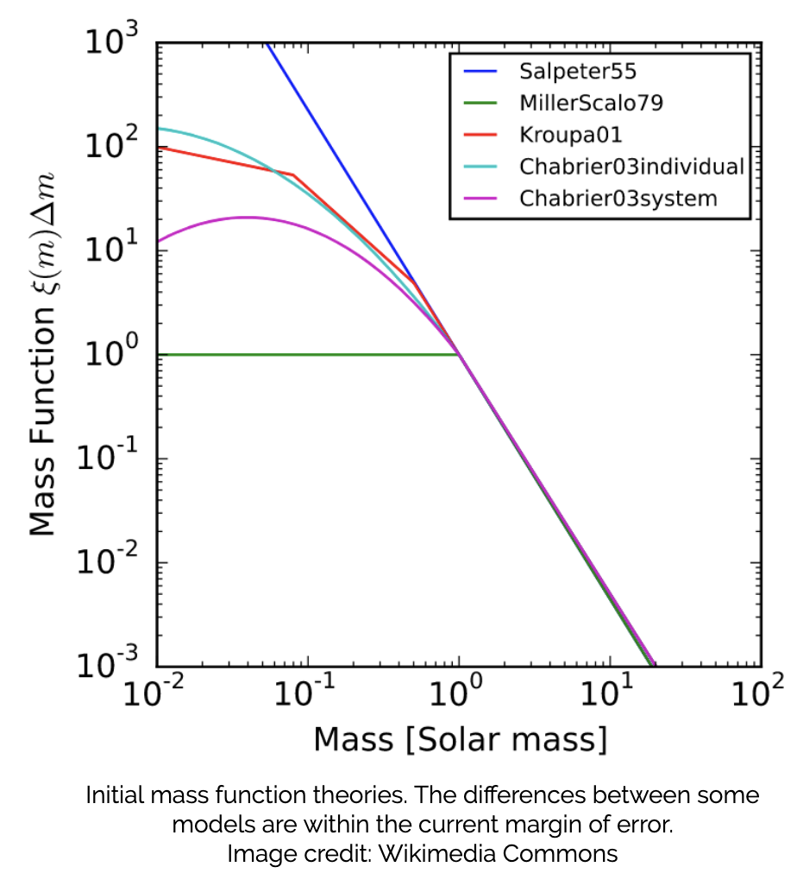
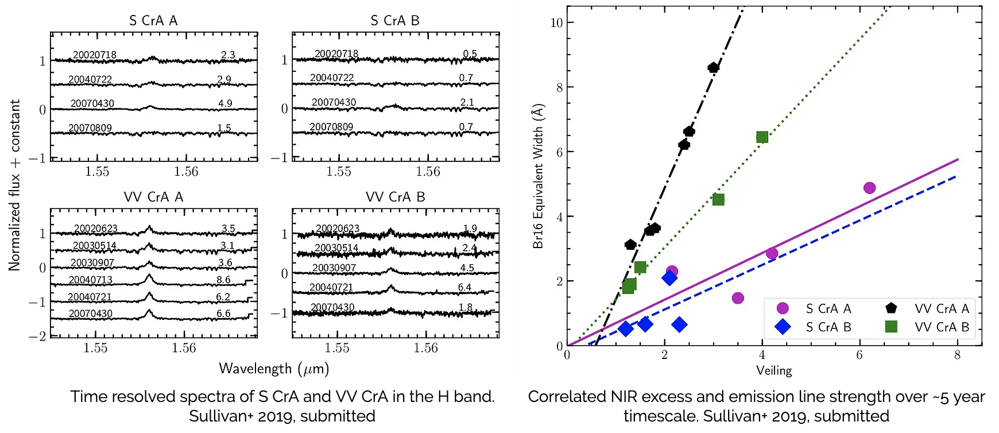

About

I received a B.S. in physics and astronomy from the University of Massachusetts, Amherst. While at UMass I studied blue compact dwarf galaxies and the magnetic fields of spiral galaxies, before beginning to work on young binary stars during an NSF REU at Lowell Observatory, in Flagstaff AZ, working with Lisa Prato. After graduating, I worked at Lowell for another six months before moving to Austin TX for grad school at UT.
Beyond research, I have been involved in outreach and mentoring within astronomy since undergrad. I was the diversity officer and then the president of the UMass Astronomy Club, and the co-director of the Orchard Hill Observatory, which is a student-run observatory on the UMass campus that opens for the public weekly. I also mentored junior undergraduates. At Texas, I have been a near-peer mentor for several undergraduates. I also have assisted with teaching, such as during an intensive Python summer school run for summer undergraduates by a senior grad student.
Research
I work on a variety of projects related to studying young stars, especially those that exist in binaries. I am interested by problems of systematic error in measuring basic properties at the star, system, and star-forming region levels. I am also interested in accretion and other energetic phenomena that occur around young stars. My goal is to not only understand individual phenomena themselves, but also to holistically examine the full stellar system to understand the complex relationships between various young star observables
Understanding Systematic Errors

About 50% of sun-like stars exist in binary systems, yet we do not have a good estimate of the systematic biases affecting our measurements of the effect of undetected binaries on stellar population statistics. Even in scenarios where a binary system is known, it may be poorly understood. The uncertainty introduced by undetected or poorly studied binary systems limits our measurements of the initial mass function. We use stellar population statistics in star forming regions to infer the initial mass function, so we must address our lack of understanding of the systematics affecting our understanding of the majority of the stellar population.
My second year project at UT will be simulating a variety of young star forming regions with "undetected" binaries added, to examine the systematic errors introduced in different scenarios - varying ages, binary fractions, masses, mass ratio distributions, initial mass functions, etc.
Measuring Binary Star Properties

At the same time I am examining binary populations in large statistical manners, I also study individual systems. As the second part of my second-year project, I will characterize the effective temperatures and luminosities of a sample of binaries taken from Kepler/K2. This fitting code will be made public, and we plan to apply it to a fairly wide variety of samples.
Observing and Quantifying Accretion

Finally, I am interested in near-infrared dust emission/infrared excess emission, accretion stream properties and composition, and accretion stream and wind structures. These figures are from Sullivan et al. (ApJ, 2019), examining the accretion and IR excess properties of two binary star systems in the Corona Australis star forming region. I have found that IR excess is correlated with emission line (e.g., accretion indicator) strength on long time scales, and one current project involves following up on this result to investigate the correlation on shorter time scales.